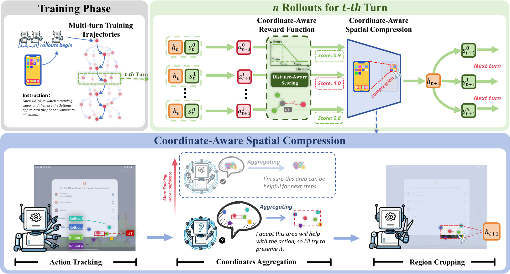

Multi-turn GUI agents enable complex task completion through sequential decision-making, but suffer from severe context inflation as interaction history accumulates. Existing strategies either sacrifice long-term context via truncation or compromise spatial structure through token pruning. In this paper, we propose Converging Compression Policy Optimization (CCPO), a unified reinforcement learning framework that couples visual compression with policy optimization for multi-turn GUI agents. CCPO introduces Coodinate-Aware Spatial Compression (CASC), which constructs adaptive attention boundaries from successful interaction experiences across multiple rollout trajectories. By aggregating coordinates from predictions and references, CASC captures the action-relevant regions that progressively converge toward key screen regions. This mechanism creates a virtuous cycle where focused inputs facilitate precise predictions, subsequently tightening the spatial boundaries for future steps. We further design a Coordinate-Aware Reward Function that provides fine-grained learning signals based on spatial precision rather than binary correctness, improving both grounding accuracy and compression quality. Extensive experiments demonstrate that CCPO achieves state-of-the-art performance across three benchmark datasets.

Figure 3. Qualitative comparison of our method against baselines.
GUI Odyssey
AITW
Android Control
| Model | History Length |
Token Length ↓ |
Compression Ratio ↑ |
Training Time (s/step) |
|---|---|---|---|---|
| SO-RL-7B | 1AO | 7888 | 0.0% | 649 |
| 3AO | 11372 | 0.0% | 982 | |
| SO-RL-3B | 1AO | 7384 | 0.0% | 437 |
| 3AO | 10830 | 0.0% | 671 | |
| CCPO-7B | 1AO | 4262 | 46.0% | 186 (3.5×) |
| 3AO | 4473 | 60.7% | 204 (4.8×) | |
| CCPO-3B | 1AO | 4271 | 42.2% | 154 (2.9×) |
| 3AO | 4460 | 58.8% | 174 (3.9×) |
Table 1. The training efficiency comparison between CCPO and Semi-Online RL on Android Control dataset.
| Model | History Format AOT |
Android Control High | GUI Odyssey | ||||
|---|---|---|---|---|---|---|---|
| TM | GR | SR | TM | GR | SR | ||
| Open-source Models | |||||||
| OS-Atlas-4B ZS | A | 49.0 | 49.5 | 22.8 | 49.6 | 34.6 | 20.3 |
| OS-Atlas-4B FT | A | 84.7 | 73.8 | 67.5 | 83.5 | 61.4 | 56.4 |
| Qwen2.5VL-3B | A | 47.8 | 46.5 | 38.9 | 37.4 | 26.5 | 26.7 |
| UI-R1-3B | -- | 57.9 | 55.7 | 45.4 | 52.2 | 34.5 | 32.5 |
| GUI-R1-3B | A | 58.0 | 56.2 | 46.6 | 54.8 | 41.5 | 41.3 |
| OS-Genesis-7B | AO | 65.9 | - | 44.4 | 11.7 | - | 3.6 |
| Aguvis-7B | A | 65.6 | - | 54.2 | 26.7 | - | 13.5 |
| GUI-R1-7B | A | 71.6 | 65.6 | 51.7 | 65.5 | 43.6 | 38.8 |
| AgentCPM-GUI-8B | A | 77.7 | - | 69.2 | 90.8 | - | 75.0 |
| OS-Atlas-7B ZS | A | 57.4 | 54.9 | 29.8 | 60.4 | 39.7 | 27.0 |
| OS-Atlas-7B FT | A | 85.2 | 78.5 | 71.2 | 84.5 | 67.8 | 62.0 |
| UI-TARS-7B | AOT | 83.7 | 80.5 | 72.5 | 94.6 | 90.1 | 87.0 |
| UI-S1-7B | AOT | 79.9 | 73.4 | 68.2 | 76.3 | 61.7 | 59.5 |
| Our Models | |||||||
| Qwen2.5VL-3B (0-shot) | AO | 24.91 | 68.28 | 20.18 | 27.8 | 46.4 | 14.7 |
| w/ SFT | AO | 85.24 | 73.45 | 68.61 | 82.9 | 82.9 | 71.5 |
| w/ Semi-online RL | AO | 82.16 | 74.09 | 62.94 | 82.6 | 81.3 | 71.3 |
| CCPO-3B-1AO | AO | 85.72 | 76.72 | 70.60 | 85.5 | 82.7 | 71.8 |
| CCPO-3B-3AO | AO | 85.33 | 77.49 | 70.79 | 89.6 | 83.0 | 76.2 |
| Qwen2.5VL-7B (0-shot) | AO | 58.91 | 70.26 | 44.14 | 55.8 | 50.8 | 31.8 |
| w/ SFT | AO | 85.94 | 75.95 | 70.60 | 88.0 | 84.6 | 76.0 |
| w/ Semi-online RL | AO | 84.40 | 75.86 | 68.62 | 90.8 | 86.3 | 79.4 |
| CCPO-7B-1AO | AO | 86.45 | 78.80 | 72.18 | 91.1 | 87.2 | 80.3 |
| CCPO-7B-3AO | AO | 86.89 | 79.72 | 73.25 | 90.5 | 87.9 | 80.1 |
Table 2. Results of our CCPO model on the Android Control and GUI-Odyssey navigation tasks. In the History format, AOT means the model includes Action, Observation, and Thought history, respectively.
| Method | Param | Mind2Web | AITW | |||
|---|---|---|---|---|---|---|
| Cross-Task | Cross-Website | Cross-Domain | Overall | ClickAvg | ||
| Qwen-VL 9.6B | 9.6B | 13.3 | 9.2 | 12.0 | 54.3 | 57.4 |
| SeeClick | 9.6B | 25.5 | 16.4 | 20.8 | 59.3 | 66.4 |
| R-VLM | 9.6B | 28.7 | 26.1 | 24.3 | 64.9 | 71.0 |
| Iris | 9.6B | 32.0 | 26.2 | 28.8 | 63.6 | 71.0 |
| Qwen2-VL | 2B | 46.7 | 42.2 | 44.6 | 57.7 | -- |
| ShowUI-2B | 2B | 37.2 | 35.1 | 35.2 | 70.0 | -- |
| SimpAgent | 2B | 48.7 | 42.2 | 45.0 | 71.5 | -- |
| TongUI-3B | 2B | 48.8 | 48.1 | 49.5 | 71.6 | -- |
| TongUI-7B | 7B | 53.4 | 49.0 | 52.9 | 73.3 | -- |
| Qwen2.5-VL-3B w/ SFT | 3B | 52.01 | 46.49 | 48.69 | 70.79 | 78.42 |
| CCPO-3B 1AO | 3B | 54.55 | 50.62 | 50.58 | 71.83 | 79.71 |
| CCPO-3B 3AO | 3B | 55.04 | 48.02 | 48.97 | 73.09 | 80.42 |
| Qwen2.5-VL-7B w/ SFT | 7B | 55.31 | 52.10 | 53.84 | 72.31 | 81.24 |
| CCPO-7B-1AO | 7B | 55.23 | 53.43 | 52.57 | 73.46 | 80.98 |
| CCPO-7B-3AO | 7B | 59.51 | 53.65 | 56.49 | 74.37 | 81.38 |
Table 3. Results of CCPO-MAX on the Mind2Web and AITW benchmark.
| Method | General | Single | Web Shopping | Install | Google Apps | Overall | ClickAvg |
|---|---|---|---|---|---|---|---|
| Qwen-VL 9.6B | 49.5 | 64.7 | 50.7 | 59.9 | 46.9 | 54.3 | 57.4 |
| SeeClick | 54.0 | 73.7 | 57.6 | 66.4 | 54.9 | 59.3 | 66.4 |
| R-VLM | 59.9 | 72.5 | 61.7 | 70.6 | 59.6 | 64.9 | 71.0 |
| Qwen2-VL | 48.3 | 57.8 | 51.6 | 77.4 | 52.9 | 57.7 | -- |
| Iris | 61.5 | 71.4 | 58.3 | 66.4 | 60.2 | 63.6 | 71.0 |
| ShowUI-2B | 63.9 | 77.5 | 66.6 | 72.5 | 69.7 | 70.0 | -- |
| SimpAgent | 64.1 | 76.2 | 67.2 | 75.8 | 74.0 | 71.5 | -- |
| TongUI-3B | 65.6 | 77.0 | 65.8 | 75.1 | 74.5 | 71.6 | -- |
| TongUI-7B | 67.6 | 79.9 | 69.1 | 76.3 | 73.5 | 73.3 | -- |
| Qwen2.5-VL-3B w/ SFT | 61.52 | 75.35 | 67.22 | 75.81 | 74.05 | 70.79 | 78.42 |
| CCPO-3B 1AO | 64.25 | 76.07 | 67.22 | 76.14 | 75.44 | 71.83 | 79.71 |
| CCPO-3B 3AO | 65.32 | 77.49 | 68.30 | 78.29 | 76.04 | 73.09 | 80.42 |
| Qwen2.5-VL-7B w/ SFT | 64.84 | 77.48 | 68.54 | 76.85 | 73.86 | 72.31 | 81.24 |
| CCPO-7B-1AO | 66.98 | 78.19 | 68.66 | 77.25 | 76.24 | 73.46 | 80.98 |
| CCPO-7B-3AO | 68.28 | 78.67 | 69.61 | 77.25 | 78.02 | 74.37 | 81.38 |
Table 5. Results of CCPO-MAX on the AITW benchmark.
| Model | AO | TM | GR | SR |
|---|---|---|---|---|
| Qwen2.5-VL-7B | 1AO | 83.75 | 74.95 | 67.97 |
| 2AO | 85.30 | 75.95 | 70.00 | |
| 3AO | 85.94 | 75.95 | 70.60 | |
| 4AO | 84.89 | 75.77 | 69.65 | |
| CCPO-7B | 1AO | 86.45 | 78.80 | 72.18 |
| 2AO | 86.86 | 79.48 | 73.19 | |
| 3AO | 86.89 | 79.71 | 73.25 | |
| 4AO | 86.27 | 80.20 | 73.11 |
Table 4. Performance comparison for AC datasets from 1AO to 4AO.
@article{author202xcompress2focus,
author = {Author, First and Author, Second},
title = {Compress2Focus: Your Paper Title},
journal = {Conference Name},
year = {202X},
}